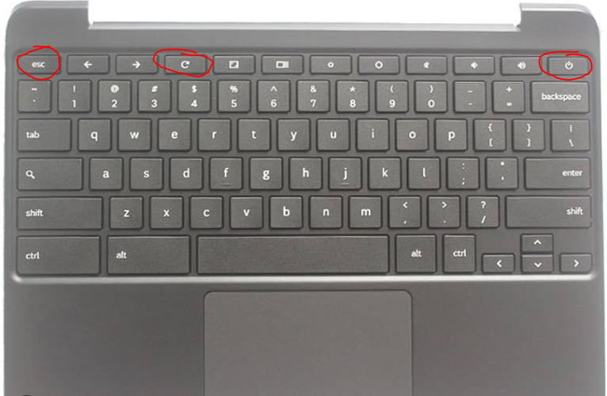
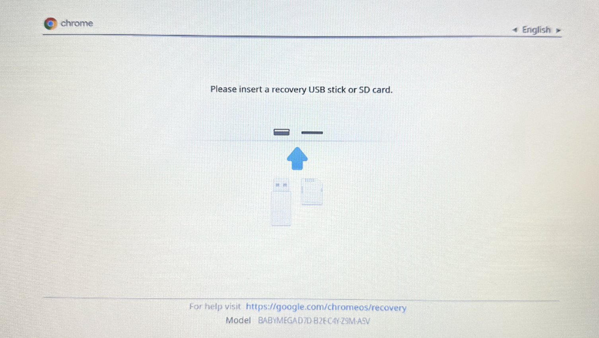
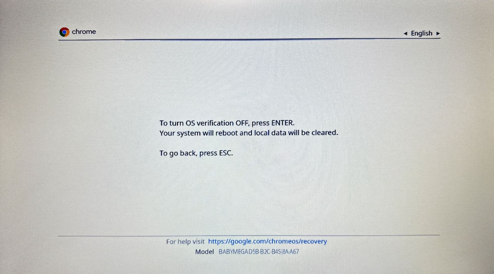
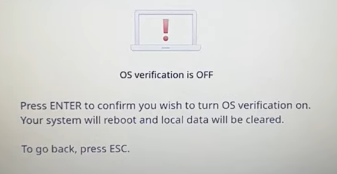
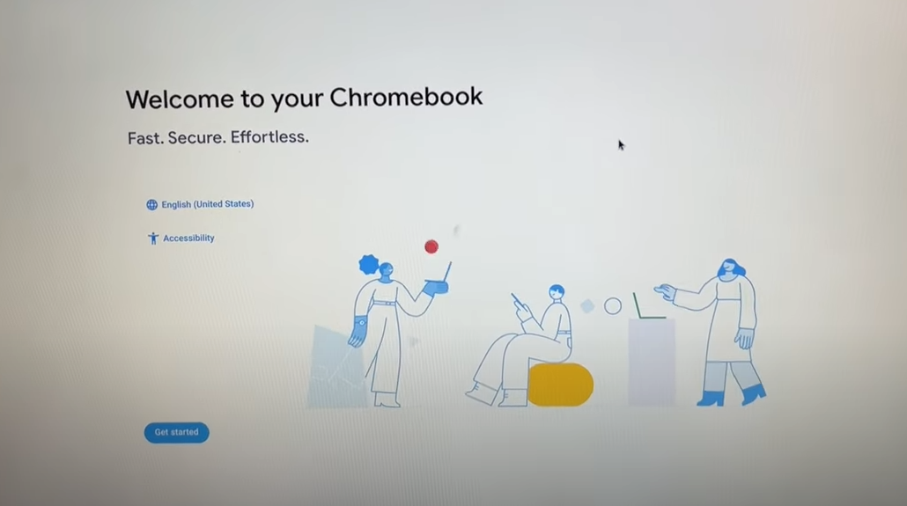
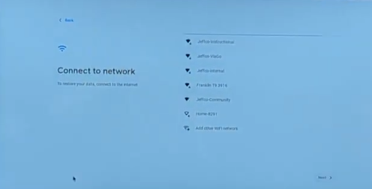
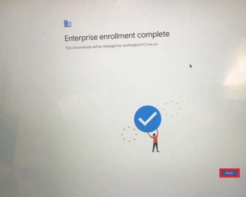

Step 1:
Press Esc and ⟳ and power buttons all at the same time.

Step 2:
You should now see a message that says. “Please insert a recovery USB stick or card.” Press the ctrl + D keys at the same time.

Step 3:
Now you should see a message that says, “To turn OS verification Off, press Enter. Your system will reboot and local data will be cleared.” Press the enter key. It will load for a small ammount of time.

Step 4:
Now you should see a message that says, “Press ENTER to confirm you wish to turn os verification on. Your system will reboot and local data will be cleared." Press enter. It will load agian.

Step 5:
When the Welcome screen appears click "Get started."

Step 6:
Connect to the schools network. If you are using a network like WLCSD Guest you might have to click the "Sign in" button. If you are using a network like Student-L you will only have to type in the password.

Step 7:
After connecting to the network the re-enrollment process will finish itself. You might have to click a "Done" button when it finishes. If for some reason the Chromebook is unable to connect to the network, try closing and opening the chromebook screen to refresh it. If that does not work, try to log in agian or use a different network.
